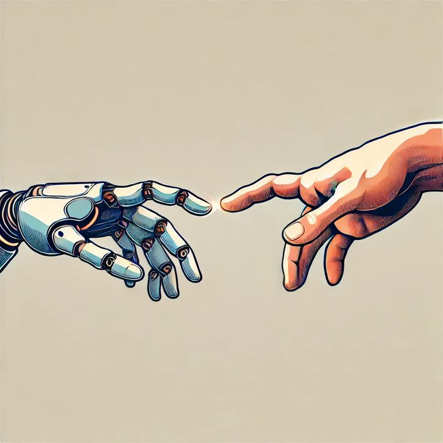
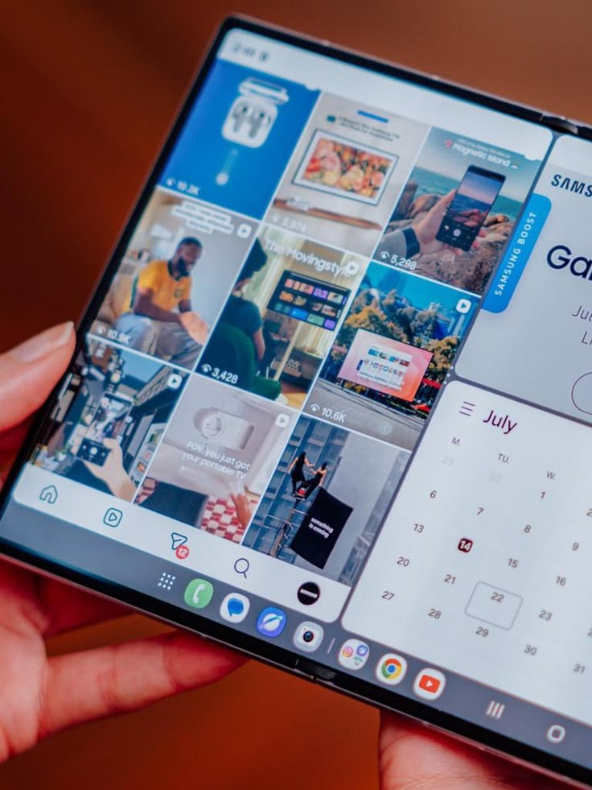
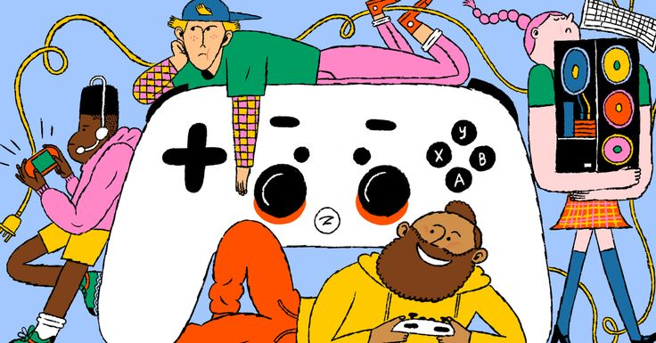
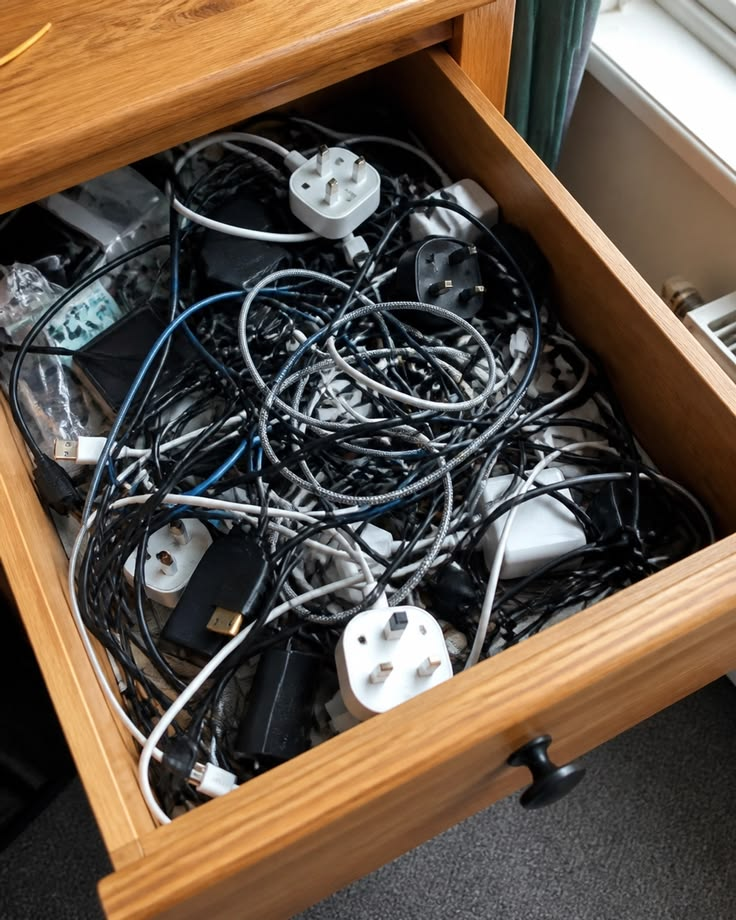
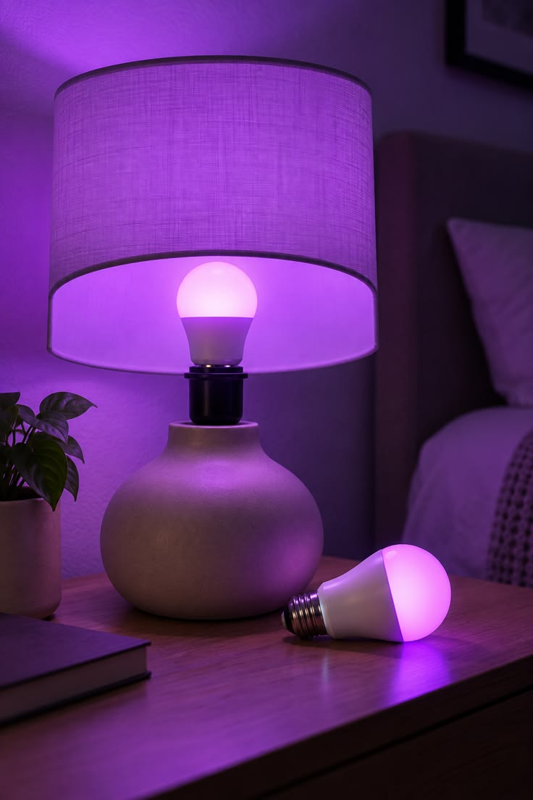

Benim Gözümden
Geleceği şekillendiren büyük trendlerden günlük hayatımıza yön veren pratik ipuçlarına, ekranların arkasındaki stratejilerden her evde yaşanan ufak teknolojik krizlere kadar her konuyu inceliyoruz. Sıkıcı teknik detaylarda boğulmadan, teknolojinin hayatımıza dokunan gerçek yüzünü keşfetmek için merceğimizden bakmaya davetlisiniz.

Yapay Zeka Gerçekten İşinizi Elinizden Alacak mı? Büyük Resme Bakıyoruz
Üretken yapay zeka araçları her geçen gün daha karmaşık yetenekler kazanırken, ofis çalışanları arasında endişe artıyor. Ancak tarihteki önceki teknolojik devrimlere baktığımızda, asıl tehlikenin yapay zeka değil, "yapay zekayı kullanan rakipleriniz" olduğunu görüyoruz.

Katlanabilir Telefonlar Ana Akım Olmaya Hazır mı, Yoksa Hala Pahalı Bir Oyuncak mı?
Ekran kıvrımlarındaki izler, menteşe dayanıklılığı ve astronomik fiyat etiketleri... Katlanabilir akıllı telefonlar son yıllarda ciddi bir evrim geçirdi. Peki, standart bir kullanıcı için geleneksel cam bloklardan vazgeçip bu yeni forma geçmenin zamanı gerçekten geldi mi?

Bulut Oyun Servisleri Konsolların Sonunu mu Getiriyor?
Evinizde devasa bir donanım kutusu bulundurma devri kapanıyor olabilir. Yüksek hızlı internet bağlantılarının yaygınlaşmasıyla birlikte bulut tabanlı oyun platformlarının gecikme süreleri nihayet rekabetçi seviyelere ulaştı. Yeni bir konsol almadan önce bilmeniz gereken tüm detaylar.
Kusursuzluğun Sıkıcılığı: Modern Web Neden Ruhunu Kaybetti?
Her uygulamanın, her web sitesinin ve her arayüzün birbirine benzediği bir döneme girdik. Tasarım sistemlerinin ve kullanıcı deneyimi (UX) standartlarının "kusursuzluğu", internetin o kaotik ama yaratıcı ilk yıllarındaki özgünlüğü nasıl yavaş yavaş öldürdü?

Atmaya Kıyamadığımız O Efsanevi Kablo Çekmecesi
"Bir gün mutlaka lazım olur" diyerek sakladığımız eski şarj aletleri, temassızlık yapan kulaklıklar ve ne işe yaradığını asla hatırlamadığımız o tuhaf dönüştürücüler. Her evde istisnasız bulunan o gizemli çekmecenin psikolojisine ve masum dijital istifçiliğimize yakından bakıyoruz.

Akıllı Ampulle İnatlaşma Sanatı
Işıkları yataktan çıkmadan sesle kapatmak başta harika bir fikir gibi gelmişti; ta ki gece yarısı karanlıkta "Bunu yapabileceğimden emin değilim" diyen bir asistanla tartışana kadar. Akıllı ev aletlerinin hayatımızı kolaylaştırması gerekirken yaşattığı o ufak çaplı, absürt sinir krizleri.